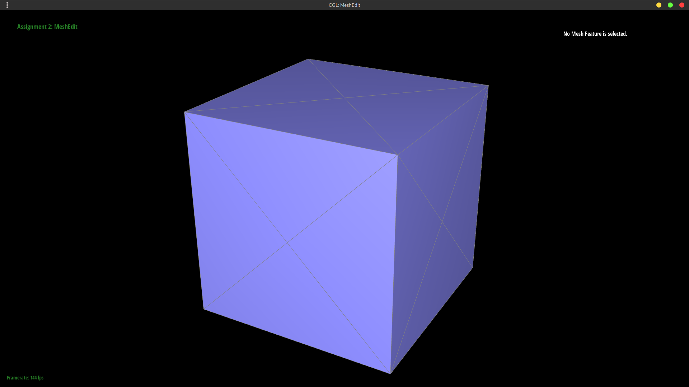
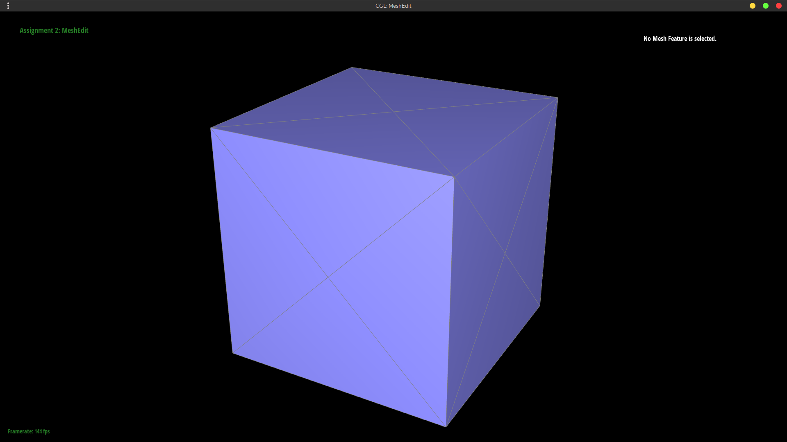
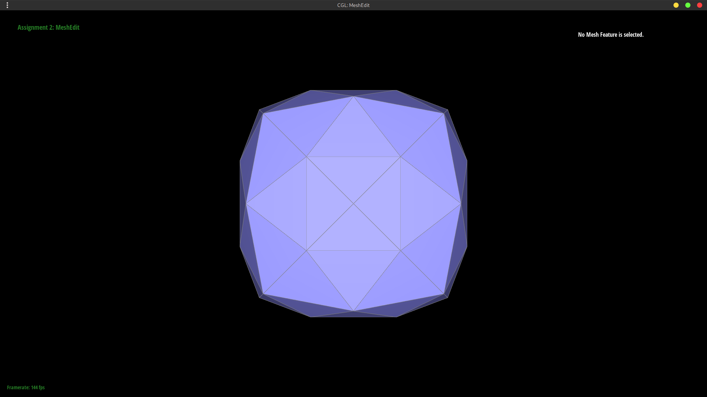
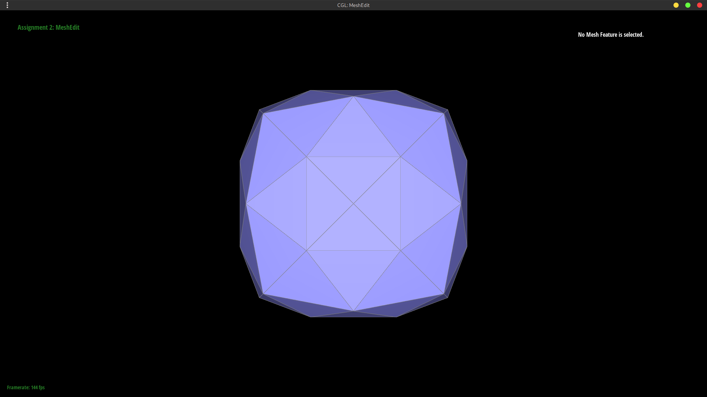
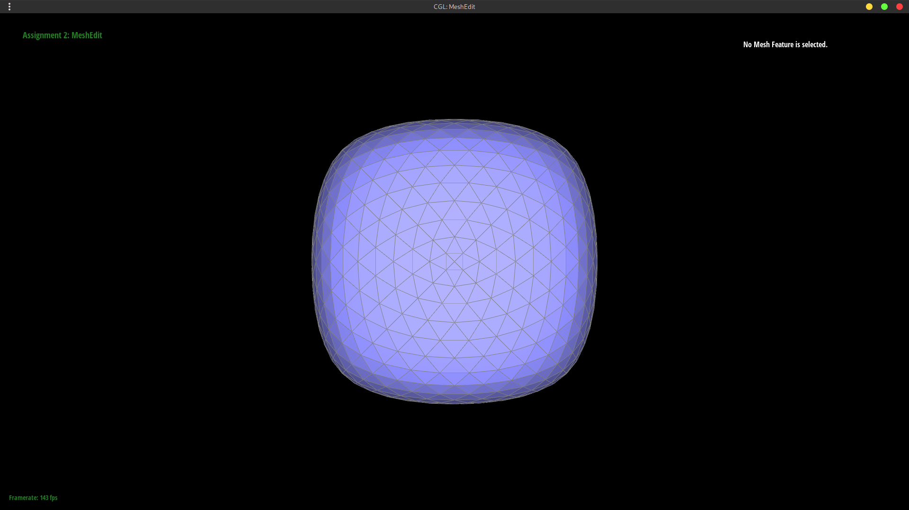
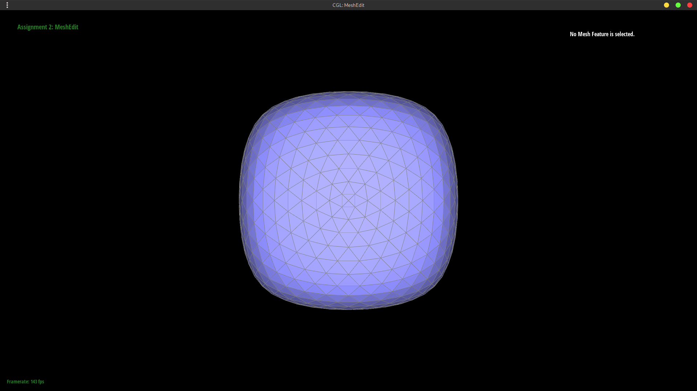

In this project we develop meshedit, first supporting Bezier curves and surfaces. We then move to mesh-space, implementing area-weighted vertex normals, edge flip and splits, then loop subdivision.
Bezier Curves
Figure A: $\text{lerp}$s all the way down.


Figure B


Bezier Surfaces
We can generalize to $\mathbb{R}^2$ by considering the $n\times n$ grid of control points $p_{ij}$. Evaluating a Bezier surface involves calculating the Bezier curve along the rows/$x$ direction, for some linear interpolation argument $u$; then, with these $n$ curves we repeat the process, effectively in the columns/$y$ direction given $\text{lerp}$ parameter $v$. This results in a single point corresponding to the surface at $(u,v)$.
Implementation wise, evaluateStep(pts,t) evaluates a single step of the de Casteljau algorithm. evaluate1D(pts,t) runs this $n-1$ times for each row. This is then called at the top, evaluate(pts,u,v), over each column and then once more to get the final point.
Area-Weighted Vertex Normals
 Source: Introduction to Shading
Source: Introduction to Shading
To go about shading, we will replace the out-of-the-box flat shading with Phong shading. The problem involves determining how we should darken a pixel in a triangle based on the angle between the light source and the normal of said triangle. Initially, we use the face normal which is fast but produces discontinuities at edges (left). Phong shading addresses this, producing a continuous gradient over a discontinuous mesh, by interpolating the vertex normals across each triangle (right).
In terms of implementation, barycentric interpolation is handled for us so all we must do is implement the function to calculate the vertex normal. This is done by iterating over each face (pair of outgoing adjacent edges from the vertex). With each, we add to a running sum the area-weighted normal of this face (i.e. the cross product of the edges). This is then normalized to a unit vector and returned.


Edge Flip
Edge flip operations involve updating the mesh topology (halfedge data structure) of the two triangles an edge is associated with. This involves traversing the mesh from $e_0$ to memoize everything in the diagram: the 10 halfedges, 4 vertices and edges, and 2 faces. When this is done, we can update references of the 6 changed (inner) halfedges, then again the half-pointer associations of the vertices $v_0, v_1$ and of both faces. While we do not update all elements memoized directly, we do need to cache them nonetheless as they are referenced by the elements we do update.
Debugging involved finding sillies where I'd mis-program the updated references. This would result in the code not matching the diagram, and produce missing edges or faces.

Edge Split
The edge split operation is implemented similarly to the flip operation, following the design pattern outlined here. Memoization is done exactly like flip; how split differs is that we now introduce a new vertex and with it two faces and 4 edges + 8 halfedges. But since we end up throwing away an original edge (and thus two halfedges) we repurpose them and only need to allocate 3 new edges and 6 halfedges. Reference updating then proceeds as before, but we also must mark isNew on $e_0$ and $e_6$ for mesh subdividing.


Loop Subdivision for Mesh Upsampling
We accomplish mesh upsampling via Loop subdivision. This process involves splitting each triangle into four, then updating the original vertices and positioning the new ones according to a set of averaging rules that grantee $\mathcal C^2$ smoothness.
{kind=link}
We first calculate and cache the new positions of all the original vertices as $(1-nu)\cdot \text{OG position} + u \cdot \sum^n_i \text{neighbor$_i$ position}$ where $n$ is the vertex degree and $u$ is $3/16$ if $n=3$ and $3/8n$ otherwise. Next, for each edge, we calculate and cache the corresponding new vertex position according to its neighbors: $(3(A+B)+(C+D))/8$ (see averaging rules picture for notation).
Now we actually go over each edge (in any order), splitting it and updating the new vertex cached position according to the edges cached position. We then go over each of these new edges and for those connecting a new and old vertex we flip -- this ensures that we obtain the same triangulation, regardless of the order in which we split edges. Finally, we go over each vertex and update its position according to the cached position.
Analogous to supersampling (discussed in project 1), we see that subdivision reduces jaggies as it increases the number of triangles (resolution). As we increase the number of iterations, sharp corners become more rounded and edges become more smooth as they're averaged. If we wanted to marginalize this effect we could pre-split edges -- this will increase the degree and thus lessen the contribution of any single neighboring vertex. Additionally, creating splits provides vertices closer to the original value, which when averaged with the original vertex will reduce the overall pull away from the original location.


When we subdivide the cube, we notice it becomes asymmetric due to the asymmetry in the mesh. No matter how we flip the edges, this asymmetry persists as the vertices do not all have the same degree; however, if we split each of the edges crossing the face (making each faces mesh a symmetric $\times$, each vertex having degree 4) we are able to maintain symmetry.
 Meet at corner
Meet at corner Split
Split

 



 
